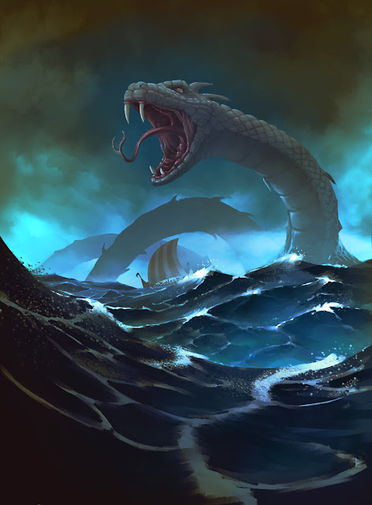

Einar e a Ilha das Caveiras
No dia em que o Ragnarök caiu sobre Midgard, o céu se partiu e o mar rugiu. Einar, viking e mestre da lança, navegava com sua tripulação, rumo ao fim do mundo.
Das profundezas surgiu Jörmungandr, a Serpente do Mundo. A batalha foi brutal. Einar perfurou suas escamas com a lança, mas o monstro afundou o navio. Todos pereceram, menos ele.
Arrastado pelas ondas, Einar acordou em uma ilha esquecida, onde crânios cobriam a areia e o silêncio pesava mais que armadura. Era um cemitério de guerreiros que enfrentaram a serpente… e perderam.
Mas Einar não ergueu um túmulo, ergueu uma promessa.
Com ossos e aço naufragado, refez sua lança. Treinou com os ecos dos mortos. E sob luas sombrias, jurou vingança.
Jörmungandr
